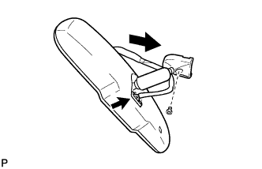
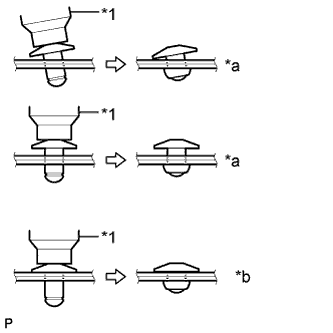
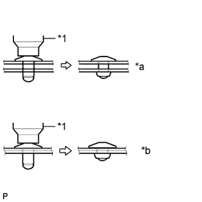
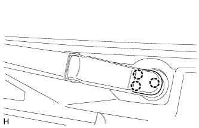

WINDSHIELD GLASS > INSTALLATION |
| 1. INSTALL NO. 1 WINDSHIELD GLASS STOPPER |
Install 2 new stoppers to the vehicle body as shown in the illustration.
| *1 | No. 1 Windshield Glass Stopper |
| *2 | Vehicle Body |
| 2. INSTALL NO. 2 WINDSHIELD GLASS STOPPER |
Apply Primer G to the glass where the stoppers will be installed.
Install 2 new stoppers to the glass at the locations shown in the illustration.
| *1 | Windshield Glass | - | - |
| *a | Backside | *b | Ceramic Notch |
| *c | Center | - | - |
| Area | Specified Condition |
| a | 14.2 mm (0.559 in.) |
| 3. INSTALL WINDSHIELD OUTSIDE MOULDING |
Using a brush or sponge, coat the contact surface of the glass and moulding with Primer G as shown in the illustration.
| *a | Backside | - | - |
| Area | Specified Condition |
| a | 6.9 mm (0.271 in.) |
Remove the peeling paper from a new windshield outside moulding and install the moulding as shown in the illustration.
| 4. INSTALL WINDSHIELD GLASS ADHESIVE DAM |
Apply Primer G to the glass where the new adhesive dam will be installed.
Remove the peeling paper from the adhesive part of a new dam. Install the dam (adhesive side) to the glass (Primer G area), but exclude the area above the notches on the upper part of the glass.
| *a | Backside | *b | Ceramic Notch |
| *c | Dam Center Line | *d | Adhesive Center Line |
| Area | Specified Condition |
| a | 6.5 mm (0.256 in.) |
| 5. INSTALL WINDSHIELD GLASS |
 |
Position the glass.
Using suction cups, place the glass in the correct position.
Check that the entire contact surface of the glass rim is perfectly even.
Place matchmarks on the glass and vehicle body at the locations indicated in the illustration.
Using suction cups, remove the glass.
| *a | Matchmark |
Using a brush, apply Primer M to the exposed part of the vehicle body.
| *1 | Primer M |
| *2 | Adhesive |
| *a | CORRECT |
| *b | INCORRECT |
Using a brush or sponge, apply Primer G to the contact surface of the glass.
| *a | Backside | *b | Adhesive Center Line |
| Area | Specified Condition |
| a | 9.5 mm (0.374 in.) |
| b | 3.0 mm (0.118 in.) |
| c | 8.0 mm (0.315 in.) |
| d | 7.0 mm (0.276 in.) |
Apply adhesive to the glass.
Cut off the tip of a cartridge nozzle as shown in the illustration.
| Temperature | Usage Time Frame |
| 35°C (95°F) | 15 minutes |
| 20°C (68°F) | 1 hour 40 minutes |
| 5°C (41°F) | 8 hours |
Load a sealer gun with the cartridge.
Apply adhesive to the glass as shown in the illustration.
| *1 | Adhesive | - | - |
| *a | Backside | *b | Adhesive Center Line |
| Area | Specified Condition |
| a | 12.0 mm (0.472 in.) |
| b | 8.0 mm (0.315 in.) |
| c | 9.5 mm (0.374 in.) |
| d | 3.0 mm (0.118 in.) |
Install the glass to the vehicle body.
Using suction cups, position the glass so that the matchmarks are aligned. Press it in gently along the rim.
Lightly press the outer surface of the glass to ensure that it is securely installed to the vehicle body.
Hold the glass in place securely with protective tape or equivalent until the adhesive hardens.
| Temperature | Minimum Time Prior to Driving Vehicle |
| 35°C (95°F) | 1 hour 30 minutes |
| 20°C (68°F) | 5 hours |
| 5°C (41°F) | 24 hours |
| *a | Matchmark |
w/ Windshield Deicer System:
Connect the windshield deicer connector.
| 6. CHECK FOR LEAK AND REPAIR |
Conduct a leak test after the adhesive has completely hardened.
Seal any leaks with auto glass sealer.
| 7. INSTALL ROOF HEADLINING ASSEMBLY |
Return the roof headlining to its original position. Refer to the following procedures (Click here).
| 8. INSTALL INNER REAR VIEW MIRROR ASSEMBLY |
|  |
Using a T20 "TORX" socket wrench, install the inner rear view mirror with the screw.
Connect the connector.
| 9. INSTALL INNER REAR VIEW MIRROR STAY HOLDER COVER |
 |
Attach the 2 claws.
 |
Attach the 2 claws as shown in the illustration to install the inner rear view mirror stay holder cover.
| 10. INSTALL RAIN SENSOR TAPE |
Clean the rain sensor sensing portion with a piece of cloth, etc.
Peel off the smaller release sheet, and then attach the rain sensor tape on the rain sensor sensing portion as shown in the illustration.
| Area | Measurement |
| A | 13.5 mm (0.532 in.) |
| B | 7.5 mm (0.295 in.) |
| *1 | Rain Sensor Tape |
| 11. INSTALL RAIN SENSOR |
Clean the windshield glass with a piece of cloth, etc.
When installing a new rain sensor or replacing the rain sensor tape:
Peel off the release sheet.
 |
Attach the 2 guides, and then carefully install the rain sensor to the glass surface so that there are no air bubbles from forming between the contact surfaces.
| *1 | Stopper |
| *2 | Guide |
Push in the stopper.
Connect the connector.
| 12. INSTALL RAIN SENSOR COVER |
Attach the 2 claws to install the rain sensor cover.
| 13. INSTALL MAP LIGHT ASSEMBLY |
Connect the connector.
Attach the 4 clips to install the map light.
| 14. INSTALL VISOR HOLDER |
Attach the 2 claws.
Push in the visor holder to install it.
| 15. INSTALL VISOR ASSEMBLY LH |
Install the visor with the 2 screws.
| 16. INSTALL VISOR ASSEMBLY RH |
| 17. INSTALL VISOR BRACKET COVER |
 |
Detach the 4 claws and remove the visor bracket cover.
| 18. INSTALL FRONT PILLAR GARNISH LH |
Attach the 3 guides to install the front pillar garnish.
| 19. INSTALL FRONT PILLAR GARNISH RH |
| 20. INSTALL NO. 1 ASSIST GRIP |
Attach the 2 claws to install the No. 1 assist grip.
Install the 2 bolts.
| 21. INSTALL FRONT NO. 1 ASSIST GRIP PLUG LH |
Attach the 2 claws to install the front No. 1 assist grip plug.
| 22. INSTALL FRONT NO. 1 ASSIST GRIP PLUG RH |
| 23. INSTALL FRONT DOOR OPENING TRIM WEATHERSTRIP LH |
 |
Align the paint mark on the front door opening trim weatherstrip with the mark position on the vehicle and install the front door opening trim weatherstrip as shown in the illustration.
| *1 | Paint Mark |
| *2 | Mark Position |
| 24. INSTALL FRONT DOOR OPENING TRIM WEATHERSTRIP RH |
| 25. INSTALL COWL SIDE TRIM BOARD LH |
Attach the clip and claw to install the cowl side trim board.
Install the clip.
| 26. INSTALL COWL SIDE TRIM BOARD RH |
| 27. INSTALL DOOR SCUFF PLATE ASSEMBLY LH |
Connect the connector.
Attach the 4 clips, 10 claws and 2 guides to install the door scuff plate.
| 28. INSTALL DOOR SCUFF PLATE ASSEMBLY RH |
| 29. INSTALL NO. 3 WINDSHIELD OUTSIDE MOULDING CLIP |
Install a nose piece to an air riveter or hand riveter.
Insert the mandrel part of a new No. 3 windshield outside moulding clip into the nose piece.
Using the riveter, install the No. 3 windshield outside moulding clips as shown in the illustration.
| *1 | Riveter |
| *2 | Mandrel |
| *a | INCORRECT |
| *b | CORRECT |
|  |
| *1 | Riveter |
| *a | INCORRECT |
| *b | CORRECT |
|  |
| *1 | Riveter |
| *a | INCORRECT |
| *b | CORRECT |
| 30. INSTALL NO. 1 WINDSHIELD OUTSIDE MOULDING CLIP |
Install the 5 No. 1 moulding clips.
| 31. INSTALL WINDSHIELD LOWER OUTSIDE MOULDING LH |
Attach the 5 clips to install the moulding.
Remove the protective tape from the edges of the moulding.
| 32. INSTALL WINDSHIELD OUTSIDE MOULDING RH |
| 33. INSTALL COWL TOP VENTILATOR LOUVER SUB-ASSEMBLY |
 |
Attach the 10 guides (B).
Attach the 6 claws and guide (A) as shown in the illustration.
Install the 2 clips to the cowl top ventilator louver sub-assembly.
| *1 | Guide A |
| *2 | Guide B |
| 34. INSTALL FRONT WIPER ARM AND BLADE ASSEMBLY RH |
Operate the wiper and stop the windshield wiper motor at the automatic stop position.
 |
When reusing the front wiper arm and blade assembly RH:
Clean the wiper arm serrations.
| *1 | Wiper Arm Serration |
| *2 | Wire Brush |
| *3 | Wiper Pivot Serration |
When reusing the windshield wiper link assembly:
Clean the wiper pivot serrations with a wire brush.
 |
Install the front wiper arm and blade assembly RH with the nut to the position shown in the illustration.
| Area | Standard Condition |
| a | 7.5 mm (0.295 in.) |
| b | 7.5 mm (0.295 in.) |
| *1 | Ceramic Dot |
| *a | Upper Limit |
| *b | Lower Limit |
| 35. INSTALL FRONT WIPER ARM AND BLADE ASSEMBLY LH |
|
When reusing the front wiper arm and blade assembly LH:
Clean the wiper arm serrations.
| *1 | Wiper Arm Serration |
| *2 | Wire Brush |
| *3 | Wiper Pivot Serration |
When reusing the windshield wiper link assembly:
Clean the wiper pivot serrations with a wire brush.
 |
Install the front wiper arm and blade assembly LH with the nut to the position shown in the illustration.
| Area | Standard Condition |
| a | 7.5 mm (0.295 in.) |
| b | 7.5 mm (0.295 in.) |
| *1 | Ceramic Dot |
| *a | Upper Limit |
| *b | Lower Limit |
Operate the front wipers while spraying washer fluid on the windshield glass. Make sure that the front wipers function properly and there is no interference with the vehicle body.
| 36. INSTALL FRONT WIPER ARM HEAD CAP |
|  |
Attach the 3 claws to install the wiper arm head cap.
| 37. INSTALL FRONT FENDER TO COWL SIDE SEAL LH |
Attach the 5 claws to install the front fender to cowl side seal LH.
| 38. INSTALL FRONT FENDER TO COWL SIDE SEAL RH |
| 39. INSTALL FRONT FENDER SIDE PANEL PROTECTOR LH |
Attach the 3 clips and guide to install the fender side panel.
| 40. INSTALL FRONT FENDER SIDE PANEL PROTECTOR RH |
| 41. INSTALL ENGINE ROOM SIDE COVER LH |
Install the engine room side cover with the 4 clips.
| 42. INSTALL ENGINE ROOM COVER SIDE |
Install the engine room side cover with the 4 clips.
| 43. INSTALL UPPER RADIATOR SUPPORT SEAL |
Install the upper radiator support seal with the 13 clips.
| 44. CONNECT CABLE TO NEGATIVE BATTERY TERMINAL |